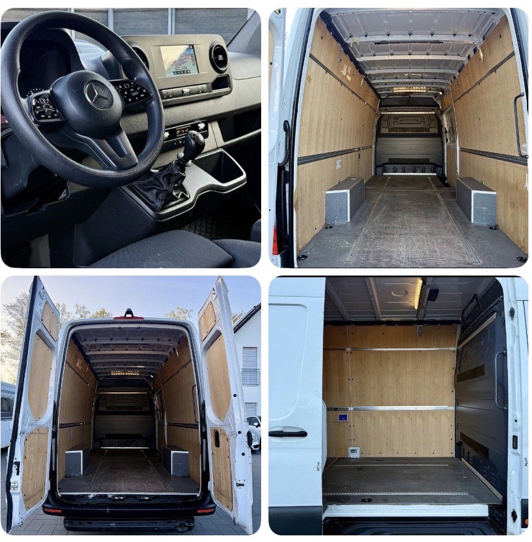

Die richtige Transportform lässt sich nicht allein aus der Entfernung oder der Anzahl der Kartons ableiten. Ein Kleintransporter kann bei einer kompakten Direktfahrt sinnvoll sein. Eine Spedition kann die bessere Wahl sein, wenn Menge, Gewicht, Umschlagtechnik oder ein bestehendes Stückgutnetz dafür sprechen.
1. Die Unterschiede im Überblick
| Kriterium | Kleintransporter / Direktfahrt | Spedition / Netzwerk |
|---|---|---|
| Kapazität | Für Sendungen innerhalb der bestätigten Nutzlast und Laderaummaße | Für größere Mengen, Palettennetze oder andere Fahrzeugklassen |
| Transportweg | Häufig ein Fahrzeug von Abholung bis Übergabe | Je nach Produkt Direktfahrt, Sammelgut oder Umschlag über Terminals |
| Zeitplanung | Individuelles Abhol- und Lieferfenster nach Vereinbarung | Abhängig von Fahrplan, Produkt und Netzwerk |
| Zufahrt | Kann bei engen Straßen oder Innenstädten praktischer sein | Benötigt je nach Fahrzeug mehr Rangier- und Ladefläche |
| Preisbildung | Route, Zeit, Auslastung und Zusatzleistungen | Gewicht, Volumen, Produkt, Strecke und Netzwerkleistungen |
Die Tabelle beschreibt typische Modelle, keine Garantie. Fragen Sie im Angebot nach, ob umgeladen wird, welches Fahrzeug vorgesehen ist und welche Leistungen enthalten sind.
2. Nutzlast und Laderaum sind zwei verschiedene Grenzen
Eine Sendung kann vom Volumen her in ein Fahrzeug passen und trotzdem zu schwer sein – oder umgekehrt. Benötigt werden deshalb mindestens Anzahl, Außenmaße und Gewicht der Packstücke. Bei Möbeln und gemischtem Umzugsgut helfen eine Inventarliste und Fotos.
Fehlen Gewichte, sollten realistische Schätzungen gekennzeichnet werden. Besonders Bücher, Maschinen, Fliesen, Metallteile oder Flüssigkeiten können eine Sendung deutlich schwerer machen, als Fotos vermuten lassen.
3. Zeitfenster und gewünschter Transportweg nennen
„So schnell wie möglich“ ist keine planbare Zeitangabe. Nennen Sie stattdessen:
- frühesten und spätesten Abholzeitpunkt
- spätesten akzeptablen Lieferzeitpunkt
- Öffnungszeiten oder feste Rampentermine
- ob eine Zwischenlagerung möglich ist
- ob eine Direktfahrt ohne geplante Umladung gewünscht wird
Eine Direktfahrt kann zusätzliche Handlingschritte vermeiden. Das bedeutet aber nicht automatisch, dass sie für jede Sendung schneller oder günstiger ist. Entscheidend ist das konkrete Angebot.
4. Zufahrt und Ladebedingungen mitentscheiden lassen
Ein passendes Fahrzeug muss nicht nur die Ladung aufnehmen, sondern auch an beide Adressen gelangen. Informieren Sie über enge Straßen, Tore, Höhenbegrenzungen, Innenhöfe, Zufahrtsverbote und fehlende Stellflächen.
Für gewerbliche Sendungen ist außerdem wichtig, ob Rampe, Stapler, Hubwagen oder Ladepersonal vorhanden sind. Ohne diese Information kann eine Kalkulation trotz korrekter Strecke unvollständig sein.
5. Angebote nach demselben Leistungsumfang vergleichen
Vergleichen Sie nicht nur die Endsumme. Prüfen Sie, ob dieselben Punkte enthalten sind:
- Abholung und Zustellung bis Bordsteinkante, Tür oder Verwendungsstelle
- Ladehilfe, Trageservice oder Möbelmontage
- Wartezeit und mögliche Terminänderungen
- Umladung, Zwischenlagerung oder Direktfahrt
- Versicherungsumfang und dokumentierte Übergabe
- Zoll- oder Zusatzaufwand bei Routen außerhalb der EU
Auf der Seite Leistungen sehen Sie, welche Transportarten ARAM grundsätzlich prüft. Eine verbindliche Aussage entsteht erst aus dem individuellen Angebot.
6. Sechs Fragen vor der Entscheidung
- Sind Maße und Gewichte aller Packstücke bekannt?
- Welche tatsächliche Nutzlast und welche Laderaummaße bietet das geplante Fahrzeug?
- Wird die Sendung unterwegs umgeladen oder zwischengelagert?
- Passen Fahrzeug und Ladeweise zu beiden Zufahrten?
- Welche Leistungen und Zeitfenster stehen schriftlich im Angebot?
- Wer ist bei Rückfragen während des Transports erreichbar?
Ladungssicherung beginnt mit korrekten Angaben
Träger und Verlader benötigen verlässliche Informationen zu Gewicht, Abmessungen und Beschaffenheit der Güter. Die Europäische Kommission stellt allgemeine Leitlinien zur Ladungssicherung im Straßentransport bereit. Die konkrete Sicherung muss zum Fahrzeug und zur Ladung passen.
Passt Ihre Sendung zu einem ARAM-Kleintransporter?
Senden Sie Maße, Gewichte, Fotos und Route. Wenn der Auftrag nicht zu Fahrzeug oder Fahrgebiet passt, sollte das vor einer Zusage klar sein.
Sendung prüfen lassen FAQ ansehen